Bio
I am currently a software engineer at Lark Health. I graduated from Stanford University with a master's and bachelor's degree in computer science.
I specialize in Human Computer Interaction (HCI) and have academic and industry experience with full stack software engineering, design, teaching, and machine learning.
I am interested in excellence in software engineering, design, education, artificial intelligence, health, accessibility, and narrative content. You can scroll down to my portfolio for information on my past projects.
Resume
Updated:
September 2020
Portfolio

Full Time Software Engineer at Lark
I have been working at Lark Health since October, 2018. During my first year, I was one of only two mobile developers. Since I joined the company has tripled in headcount. In 2020, we raised $70 million in Series C funding.The Company
Lark is the world's largest A.I. healthcare provider, we service patients suffering from or at risk of chronic disease with A.I. Nurses. In early 2020, our user base dramatically increased with the announcement of partnerships with Highmark, United, and Anthem, that will connect us to millions of new patients.
My Role
I have been working primarily on the mobile team but have spent some time on product and backend roles. My focus has been on
1. Modernizing our stack to meet the demands of exponential user growth and
2. Developing features that improve the user experience.
My Work
• I am experienced in TypeScript, React Native, and Node.js. I also work in Java, Android, iOS, devops & AWS infrastructure, and Python.
• I implemented bluetooth and cellular device integrations
• I created a node microservice for server side UI rendering (using functional programming best practices —e.g. fp-ts).
. I separated our front-end business logic from the UI code for modularity and better testability. • I am responsible for migrating our native codebases to React Native. . I actively promote functional programming best practices internally (via a study group + code reviews)
In addition to engineering,
• I’ve travelled as the engineering lead on usability studies
• I've represented our company during a 2 quarter mentorship program at Stanford
• And I am actively involved in hiring decisions and have given 100+ engineering interviews, on topics from across the board.
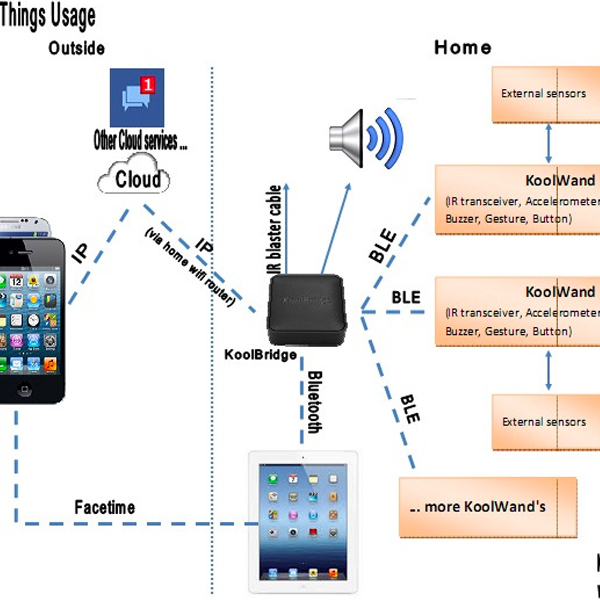
The project's goal is to build an app for indoor navigation, aimed specifically at helping people with visual impairments explore the world without vision.
NavCog Project + Ability Hacks
I joined Ability Hacks on 9/2020 to lead engineering development and HCI work on the NavCog project. NavCog started in CMU’s Cognitive Assistance Laboratory. It is now being continued by Ability Hacks.The project's goal is to build an app for indoor navigation, aimed specifically at helping people with visual impairments explore the world without vision.
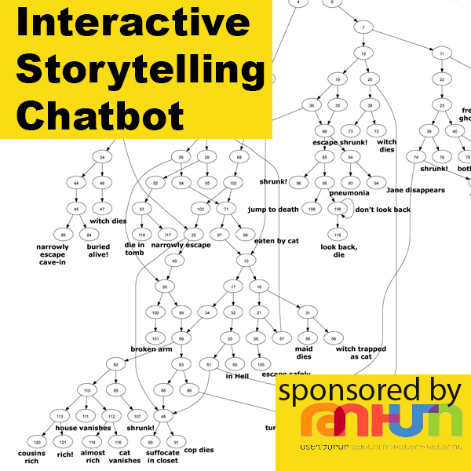
Chatbots for Interactive, Rhizomatic Storytelling
Inspired by Code in Place and the Smart Primer project, my sister, Sophia Moore, and I designed and taught a month long course for Armenian high schoolers. Our course was sponsored by the TUMO program and had a mixed focus on narratology and software engineering. Students first learned the elements of storytelling, then went on to create their own "rhizomatic" (choose-your-own-adventure style) narratives. For the engineering portion of the course, students built a Telegram chatbot server using TypeScript, Node.js, and functional programming best practices. The students converted their stories into a graph structure to be parsed by their storytelling engine and used to serve user responses.
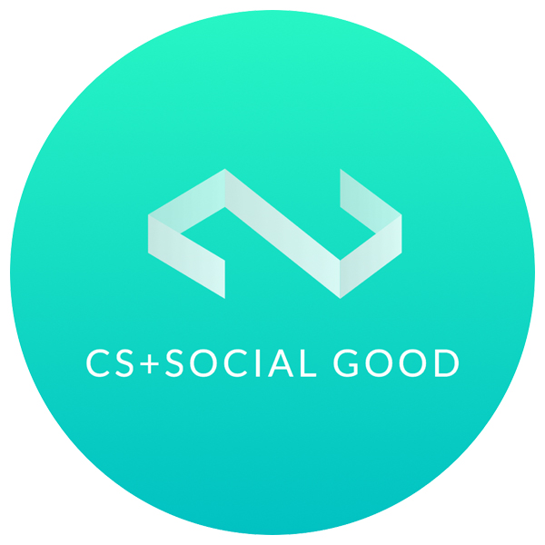
Stanford CS + Social Good Mentor
I was Lark’s representative (we were a corporate partner) for this two quarter design studio course at Stanford. I mentored students to build impactful technical projects.
COVID-19 Code in Place Section Leader
I was a section leader (TA) for Stanford’s Code in Place course. This was a free, open enrollment version of Stanford’s intro to CS course that was specifically tailored for the circumstances of the COVID-19 pandemic.
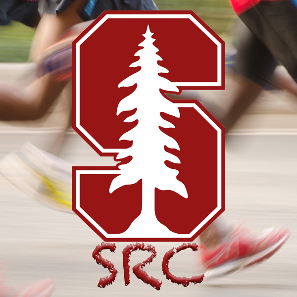
Stanford Competitive Running Club
I was a founding member and a leader of the Stanford Running Club. I’ve been actively involved in the Stanford running community since 2012 and have competed in many events including national club championships (NIRCA), iron man triathlon, and hundred mile relays.
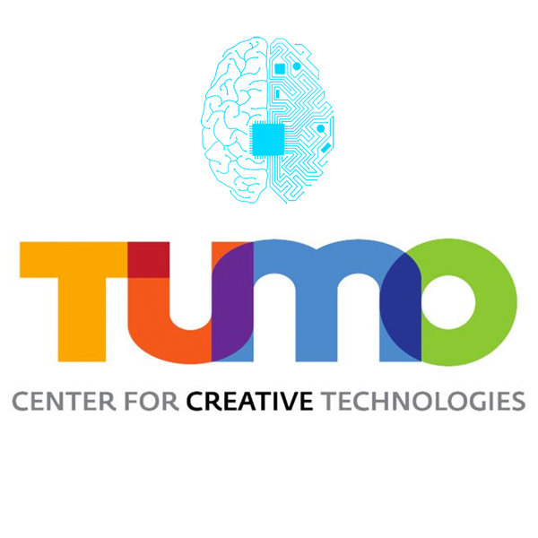
TUMO: one month of teaching AI workshops
I designed and taught two intensive AI workshops for high schoolers in Yerevan and Beirut. We focused on minimax search, neural networks, and style transfer.
Google Software Engineering Internship
Designed and implemented Ad Extensions with the Google Adwords Team.Stanford Teacher's Assistant
I was a TA at Stanford for nine quarters during college and received the Stanford Teaching Honors Award in 2017. See the links below for more information on each of the courses that I've staffed.Google Software Engineering Internship
Upgraded data pipeline for Google OneBox, on the Google Knowledge Graph Team.PayPal Software Engineering Internship
Designed and implemented a dashboard and other internal tools on the Core Payments Team.
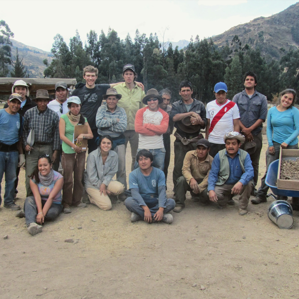
Archaeology Research at Chavín de Huántar
Employed as a Stanford researcher on a small team that located a buried 2,500+ year old ceremonial chamber at a UNESCO World Heritage site in the Andes of Peru. I did 700+ hours of field and lab work.
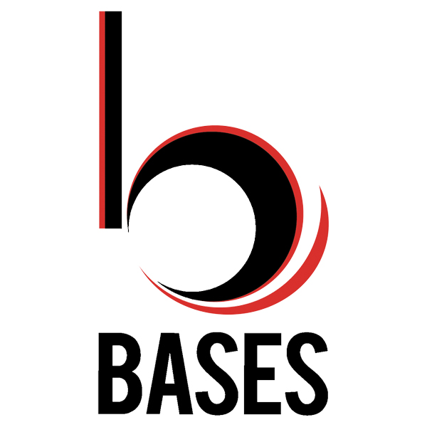
Business Association of Stanford Entrepreneurial Students (BASES)
In 2014 I was the BASES E-Challenge Coordinator. In this role I planned a $150k startup competition.Stanford Class President
I was elected as a Junior class president. In this role I attended administrative meetings and planned campus wide events, such as our class formal on a boat and Stanford Full Moon on the Quad.
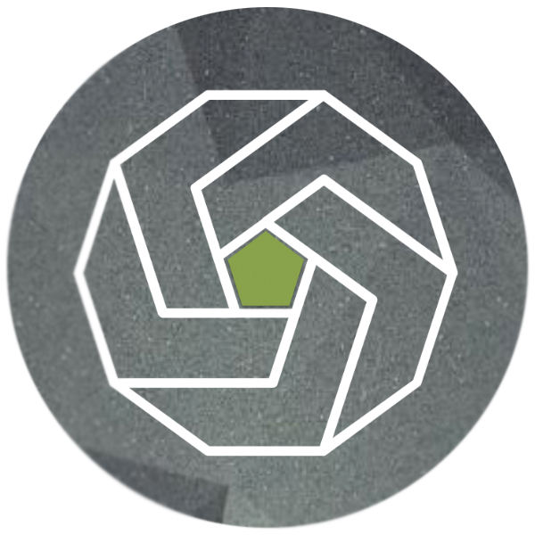
Facet: An emotionally sensitive corporate meeting assistant
A multifaceted assistant (Amazon Alexa voice assistant + video analysis + web interface) that helps keep corporate meetings on track. The product also aggregates discussion topics, sentiment, and emotional data from meetings for management—to help pinpoint effective behavior patterns. A CS210 Senior Project with sponsorship from VMWare. Class Project Award winner, Pejman and Mar (Pear VC) Award winner.
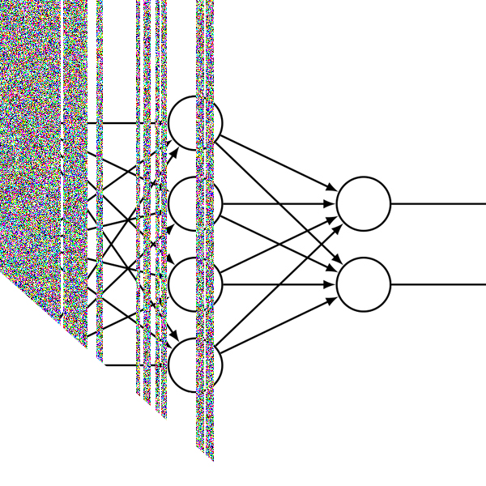
Adversarial Examples for NLP Contexts
We present two methods of generating adversarial examples for an NLP task, and also introduce a new loss function for training word vectors in a CBOW model. A CS221 and CS224N class project
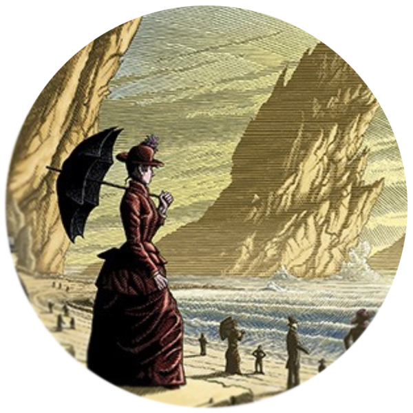
Smart Primer: Revolutionize Education with Artificial Intelligence
Early work with Professor James Landay on the Smart Primer Project: an interactive, narrative-based tutor that combines some of the best features of both physical and electronic based learning methods.Video tagging using frame captions
Extending state of the art CNN image captioning techniques to a video tagging task, a CS229 class projectFinding protests in social media
Using CNNs to identify protest images on Chinese social media (which are frequently censored), a CS224N class project
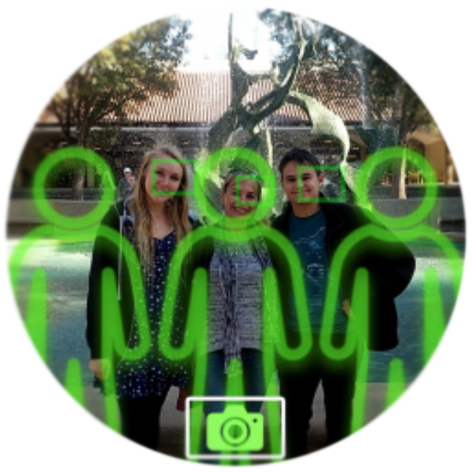
"Can you take my photo?"
A lightweight guidance system that helps a stranger capture the perfect shot, a CS376 class project
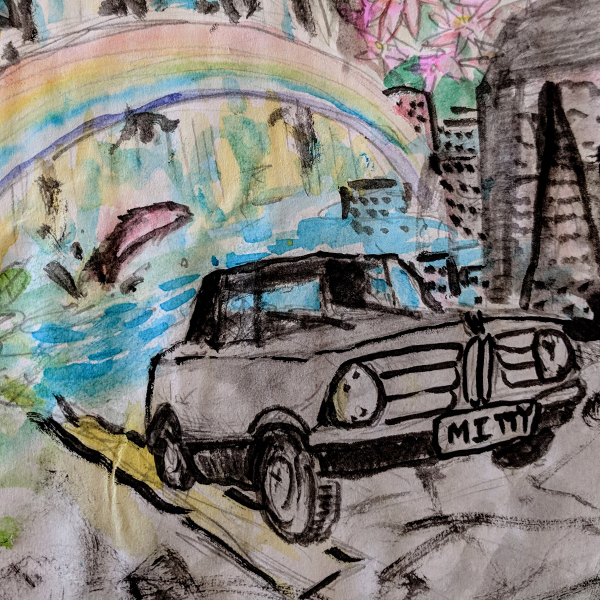
Creativity boosting environments in autonomous cars
Ongoing user research in collaboration with the Volkswagen Automotive Innovation Lab at Stanford on increasing creativity during daily commuting, with Elizabeth Murnane and Professor James Landay
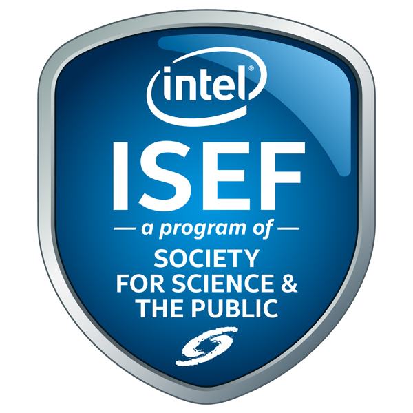
Finding harmonics in plasma
A predictive model for standing wave patterns in plasma, based on data from my high speed photography of neon signs. A Third Place Project at the Intel International Science and Engineering Fair and winner of an American Vacuum Society Award and a Full Tuition Scholarship to Drexel University
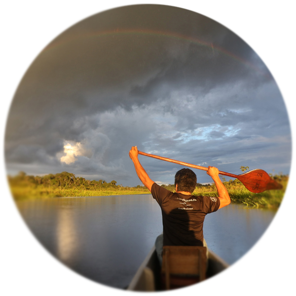
Developing sustainable Amazon ecotourism
60+ hours of interviews with experts and members of Quechua and Waorani tribes in the Amazon basin and cloud forests of Ecuador. Footage is still being edited into a short film. Sponsored through Stanford BOSP and Professor Margaret FullerMakani Power (now Google X) Internship
Helped manufacture high altitude wind turbines and self-guided kites. Primarily used SolidWorks and operated tools in the CAD workshop.A general game playing agent
A Java prop net GGP player with performance boosts from factoring and latches. This program made it to the semifinals of the end of year class competition. A CS227b class project
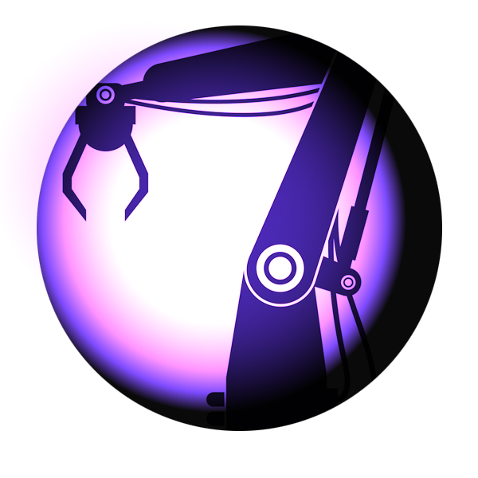
Visuomotor Learning: Object Classification
A CNN for Amazon's robotic arm pick-and-place task. Our model can use large amounts of generated data (multiple camera angles, many scenes) and is intended to boost the performance of existing models on the actual task via transfer learning. A CS230 class projectPensieve
An app for sharing memories with loved ones at specific moments, a CS247 class project
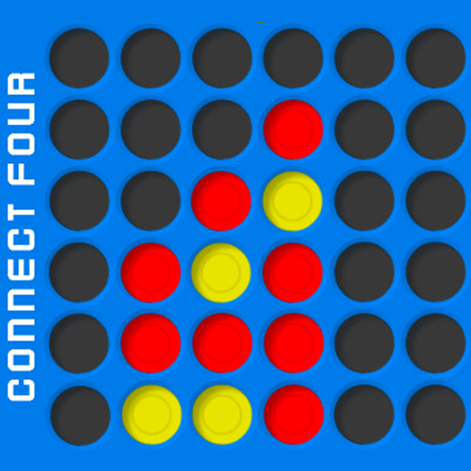
Connect Four game with AI opponent
Freshman year entry for the 2013 CS106B class Recursion Competition. Awarded The Grand Prize
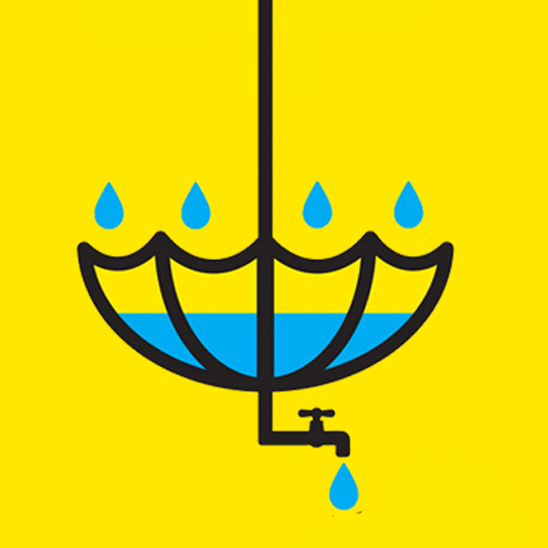
Stanford Change Labs: Designing a water catchment system for rural India
Mechanical engineering + design research with The 100 Liter Water Project at Stanford Change Labs. My focus in this project was on designing a sun-tracking solar panel power supply.Web based call center with audio transcription
Functional prototype for a Twilio based call center. Makes and transcribes calls.
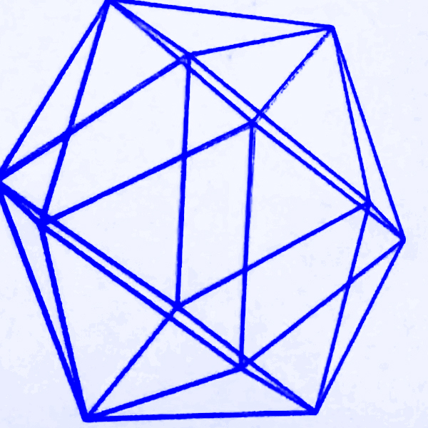
Platform for creating, manipulating and visualizing multidimensional shapes
Freshman year entry for the 2012 CS106A class Graphics Competition. Awarded The Grand PrizeRally: A social network for staying active
A mobile web app for people to connect with friends and plan activites. A CS147 class projectEagle Scout
Active in the Boy Scouts of America, achieved the highest rank. Helped lead many backpacking trips, including the John Muir Trail.Contact
- If you're interested in any of the projects here or would like to get in touch,
- shoot me an email at dylanedwardmoore (at) gmail.com, thanks!